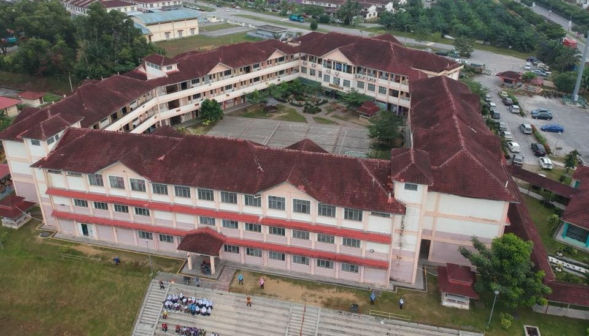

MY EDUCATION
My Primary School Experience
My primary school years were filled with valuable learning experiences and personal growth. From the age of 7 to 12, I began my education journey at Sekolah Kebangsaan Pandan Indah for the first month. Soon after, I transferred to Sekolah Kebangsaan Bandar Rinching, where I would spend the rest of my primary school years.
During my time at Rinching Bandar Kebangsaan School, I was trusted with the role of a school supervisor, which taught me responsibility and leadership.
Dance Representation (2013-2015)I represented the school in dance events, which allowed me to showcase my creativity and passion for performance.
Cross-Country Representation (2015-2016)In my later years of primary school, I represented the school in cross-country events, fostering my interest in athletics and teamwork.
UPSR Examination (2016)In my UPSR exams, I achieved 1A, 4B, and 1C. This experience taught me the importance of hard work and resilience.